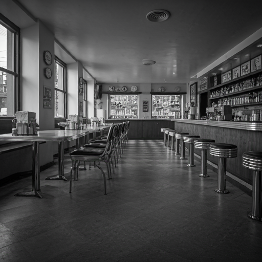
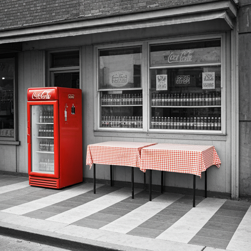
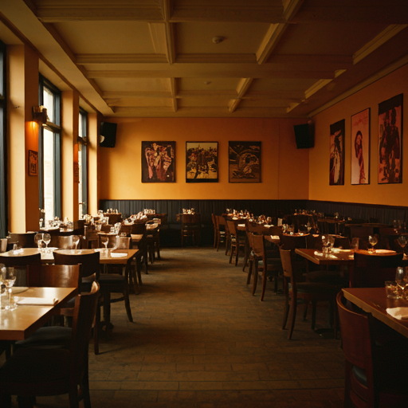
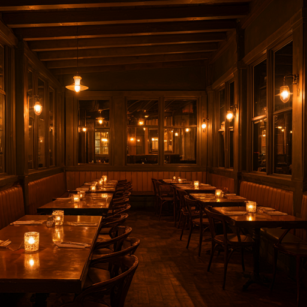

We established in 1965
Our restaurant has been a cornerstone of the community for generations, serving up delectable dishes that have been passed down through our family for decades. With each bite, you'll experience the rich flavors and culinary heritage that have made us a beloved local institution. Our commitment to quality, tradition, and exceptional service ensures that every meal is a memorable experience.


First Generation
Pioneering Plates: Birth of Restaurant
The story of this family restaurant began with a single location and a dream. Founded by a passionate cook, the first generation set up a small eatery that focused on serving classic, homestyle dishes made from fresh, local ingredients. Their commitment to quality and warm, welcoming service quickly won over the hearts of the local community, laying the groundwork for what would become a beloved family tradition. Despite modest beginnings, the first generation's dedication built a strong foundation that would inspire the future.
Second Generation
New Era of Taste: Evolution of Dining
The second generation, raised in the heart of the kitchen, brought new ideas and a vision to expand the family’s culinary legacy. With a blend of tradition and innovation, they introduced a few more locations and expanded the menu, adding creative takes on the original recipes to cater to evolving tastes. Their efforts modernized the restaurant while honoring its roots, and soon, it became a household name beyond the local area. Their commitment to quality and consistency upheld the family values, allowing them to connect with a broader audience while preserving the essence of their culinary heritage.


Third Generation
A Modern Twist on Tradition
Now in its third generation, the restaurant continues to flourish, blending traditional flavors with contemporary flair. Embracing the digital age, they’ve enhanced customer experiences with online reservations, home delivery, and engaging social media presence. The current generation brings a passion for sustainable, locally sourced ingredients, appealing to a modern, health-conscious clientele. With a fine balance of honoring family recipes and adapting to today’s dining trends, this generation is keeping the legacy alive while introducing the brand to new audiences across different regions.